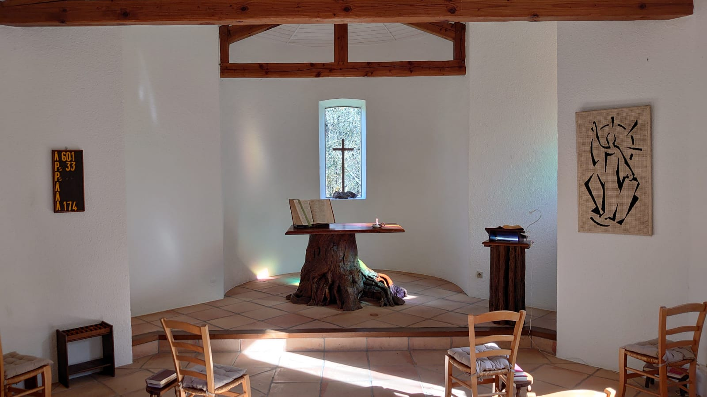

Actualités
L’accueil pour des retraites spirituelles ne pourra rouvrir en ce printemps-été 2023, comme initialement prévu. Nous vous tiendrons informés de l’évolution de la situation sur ce site. Merci de votre compréhension.
Que Dieu vous bénisse !

Le monastère
Un monastère protestant ?… !
« Se retirer dans un lieu « désert » pour prier n’est pas échapper aux réalités du monde ; c’est les discerner plus clairement et nous équiper pour nous engager à leur faire face plus efficacement dans la prière et dans l’action.
Ce temps passé seul avec Dieu, si important pour Jésus, est un fondement essentiel de la vie et du témoignage chrétiens. Mais il ne s’agit pas de vivre ce temps comme une fuite. On ne se retire pas dans la solitude pour être seuls, mais pour approfondir notre relation avec Dieu dans son amour pour toute la terre habitée et en solidarité avec elle.
La dimension contemplative de la prière, en nous ouvrant à l’amour et à la présence de Dieu, inspire et féconde notre témoignage dans ce monde que Dieu a tant aimé ». (John Stroyan)
Si les Réformateurs, au 16e siècle ont pu porter, à juste raison, de nombreuses objections sur le monachisme de leur époque (tout en adhérant au monachisme des premiers siècles), il apparaît nécessaire aujourd’hui, au 21e siècle, que le protestantisme puisse à nouveau s’interroger sur la pertinence et les potentialités de la vie monastique en son sein. En effet, les lieux monastiques accueillant pour des retraites spirituelles répondent de plus en plus à la soif de nombreux protestants. Quels fruits spirituels de tels lieux peuvent-ils apporter aujourd’hui dans la vie des personnes qui les fréquentent et au sein de la tradition protestante ? Et si le monachisme du 21e siècle pouvait être pertinent au cœur d’une dynamique d’évangélisation ?... être non pas en marge des Eglises institutionnelles, comme des lieux « exotiques », mais bien au cœur des Eglises. Dans le christianisme oriental encore aujourd’hui (comme ce fût le cas également, par le passé, dans le christianisme celtique), la vie de l’Eglise se construit autour des communautés monastiques…
Si un monastère est un lieu dans lequel on peut se mettre à l’écart pour quelques jours, les consacrer à la prière, à la lecture des Ecritures, à l’écoute de la Parole de Dieu, à une unification profonde de l’être, à l’ouverture à toute guérison ou libération spirituelle, à un temps de préparation et de formation pour l’envoi en mission, à l’apprentissage d’une sobriété heureuse, en quoi ne pourrait-il pas être protestant ?! Prier, lire la Bible, nourrir sa relation avec Dieu, se laisser soigner par lui, apprendre une vie joyeusement sobre, tout cela pour revenir chez soi partager les fruits reçus : ne serait-ce pas le cœur de la tradition protestante ?...
Un monastère… mais où est la communauté ?
C’est le paradoxe de ce lieu : lorsqu’on imagine un monastère en Occident on pense à une communauté plus ou moins nombreuse de moines et de moniales, avec tous ses « codes » que nous avons en tête. Nous sommes ainsi influencés par le monachisme bénédictin, mais le monachisme en Orient (ou encore une fois, par le passé dans le christianisme celtique) n’a pas exactement les mêmes points de référence. En effet, en Orient, existent par exemple des « laures », qui sont des lieux de vie dans lesquels vivent un très petit nombre de moines ou moniales en retrait, parfois aussi en solitude. Elle est constituée généralement d’un lieu commun de prière liturgique (une église ou une chapelle), avec des ermitages individuels, constituant donc un pont entre le cénobitisme (c’est-à-dire une communauté plus conséquente de moines ou de moniales qui vivent ensemble), et l’érémitisme (la vie en solitude totale). Dans le christianisme celtique, les monastères étaient composés d’hommes et de femmes, de célibataires et de personnes mariés, la place des femmes étant pleinement reconnue… Un monastère peut donc revêtir différentes formes.
Ainsi, les Abeillères sont un monastère en ce qu’il s’y vit une vie monastique dans laquelle les retraitants sont invités à se plonger en communion avec celles et ceux qui vivent ou travaillent en ce lieu en permanence ou de manière temporaire, à la manière d’un moine venu se retirer au désert pour vivre l’intimité avec Dieu. Ce qui est vécu ici est la réalité d’une vie communautaire qui se renouvelle de semaine en semaine : c’est l’expérience de la réalité d’une petite « communauté provisoire ». Chaque retraitant est ainsi invité à s’immerger ainsi dans cette vie au « désert » pour quelques jours, avant de repartir chez lui porter du fruit.
Le monde a soif de lieux de prière et de silence…
Pour que nous puissions bourgeonner et fleurir en disciples de Jésus-Christ, il faut que la Parole et la prière nous travaillent en profondeur. C’est une nécessité de la croissance. Mais les racines d’une plante sont, le plus souvent, invisibles, enfouies sous la terre. Et ce sont elles qui permettent de puiser la nourriture au plus profond de la terre. Sans les racines, aucun fruit possible… Il en est de même de notre prière, dans le secret de notre cœur … Et c’est à partir de ce qui se vit là, dans le secret de Dieu, que nous pourrons ensuite rayonner. Ce qui nous est nécessaire pour aimer est puisé en Dieu, dans le secret de notre prière. Appliquons-nous à la prière et nous serons couverts de fruits…
Mais parfois dans nos vies quotidiennes, le tourbillon de nos activités, de nos vies familiales, professionnelles, nous font arriver à bout de souffle spirituellement. Et alors, nous sentons que nous avons soif d’un lieu de prière et de silence, pour vivre un cœur à cœur avec Dieu, à l’écoute de sa Parole, pour reprendre souffle… Un lieu où le rapport au temps se vivra en fonction de la prière et non en fonction de la montre ou de l’agenda… Oui, il y a tant de distractions, de soucis et de préoccupations qui nous dispersent loin de Dieu, que nous cherchons des lieux pour être tout à Dieu, n'être dérangé par personne, prendre tout le temps pour Dieu, amoureusement. Ces lieux dont nous avons soif, sont des lieux rares… où nous pouvons vivre sans le moindre bruit parasite, entourés de nature, sans la télé, sans internet, sans son téléphone portable, sans les réseaux sociaux… Ces lieux dont la seule sonnerie est celle de la cloche qui appelle à la prière…
Des lieux où l'on peut même manger comme « en tête à tête » avec Dieu, lors de repas où soi-même et les autres font silence pour ne pas troubler ce tête-à-tête, des repas tout en prière intérieure... Des lieux où la « Marthe » de l'Evangile ne s'agite plus mais vient s'asseoir à côté de Marie pour savourer avec elle la meilleure part.
Des lieux sans bousculade, ni précipitation, où chaque bouchée de pain peut être une action de grâce. Des lieux où l’on peut participer au travail manuel sans interrompre son entretien avec Dieu, où le travail se vit en silence… Des lieux non de consommation, mais de sobriété heureuse…
Des lieux où l'on peut retourner à la chapelle quand on veut ou bien aller faire une balade sur les sentiers ou près de la rivière avec Dieu, ou bien encore se retirer dans sa chambre, tout cela pour écouter sa Parole…
Des lieux où dans les offices, volontairement dépouillés, le silence vécu ensemble laisse résonner la Parole de Dieu et notre prière… Des offices où il peut nous être donné de chanter les psaumes en faisant corps et où il peut nous être donné d'entendre aussi le Christ en train de prier les psaumes avec nous...
Des lieux où même la bougie reflète la présence attentive de Dieu, tout en éclairant la Bible ouverte à ses côtés et qui nous ouvre ses secrets...
Des lieux où l'on se sait porté par la prière des autres, présents ou absents.
Des lieux desquels on pourra partir, en gardant au cœur ce qui nous aura été donné, avec le désir de le mettre en pratique dans nos lieux de vie…
Humblement, le Monastère des Abeillères souhaite être un lieu de la sorte… C’est Dieu qui a façonné ce lieu, qui le bénit au quotidien et nous sommes tous là, permanents ou seulement de passage, pour prendre soin de la prière de chacun et chacune en cette maison. La seule raison d’être du Monastère des Abeillères, c’est la prière. Si vous venez pour la prière, alors posez votre valise, entrez dans l’écrin de la prière où Dieu vous attend et vivez ce temps de désert, d’intimité avec Lui, en sachant que ce lieu est fait pour cela. Peut-être vous direz-vous que vous ne savez pas prier. Ça n’est pas un problème ! il suffit d’avoir le désir, l’Esprit Saint se chargera du reste !
Venir en retraite
Comment ça se passe une retraite spirituelle ?
Une retraite spirituelle, c’est un temps à l’écart, consacré à la rencontre personnelle avec Dieu, à la prière, à l’écoute de sa Parole. C’est pour cela que la maison vit au rythme du silence et des temps de prière en commun à la chapelle qui donnent le rythme à la journée.
Dans une retraite, on ne vient pas d’abord chercher une nourriture intellectuelle, mais une nourriture spirituelle. Une retraite ne se situe pas sur le plan des idées, mais au niveau du cœur et de la conversion profonde. Le monastère des Abeillères est un lieu à l’écart, au milieu de la nature : lieu de contemplation, de sobriété heureuse, de calme. Tout est fait pour que ce lieu soit propice à la prière et à l’écoute de la parole de Dieu.
Mais pourquoi le silence ?
Le silence qui est proposé ici est donné comme un écrin pour recueillir notre prière et la Parole de Dieu. Il est un écrin, un superbe écrin même, mais un écrin seulement, c’est-à-dire qu’il est fait pour être destiné, ménagé, préparé pour un bijou, une perle qui vient se poser en lui et qui est autrement plus précieuse que lui : la prière, la méditation de la Parole de Dieu. Le silence n’est pas un but en lui-même, mais chacun est invité à veiller sur ce silence pour les autres qui l’entourent et pour lui-même. L’unique but étant la possibilité de vivre un temps de cœur à cœur avec Dieu.
Si vous souhaitez avoir des partages fraternels avec des personnes se trouvant dans la maison, il vous sera donc demandé de pouvoir les vivre dans les espaces extérieurs.
Si l’expérience du silence vous est difficile, il sera possible d’en parler et d’être accompagné pour cela.
Comment se déroulent les temps de prière en commun ?
C’est la cloche, suspendue entre ciel et terre, qui donne le tempo à la journée aux Abeillères ! Elle invite à l’office en commun : elle sonne pour l’essentiel. Elle commence déjà la louange par ses trois petits coups finaux qui annoncent « Saint, Saint, Saint est notre Dieu, Père, Fils et Saint-Esprit ».
Elle retentit ainsi trois fois par jour pour nous inviter aux offices de 8h00, 12h00 et 18h00.
Un feuillet vous indiquera le déroulement des offices. Sentez-vous très libres de rester assis, de vous lever, de vous mettre à genoux… il n’y a pas de « règle », l’important étant que votre corps puisse librement participer à votre prière.
Les offices commencent par une invocation et un chant. Puis les psaumes sont chantés (psalmodiés), et antiphonés (un côté de l’assemblée, puis l’autre) sur une mélodie et un rythme simples, plongeant ainsi dans les racines juives et les racines des premiers chrétiens pour qui les psaumes étaient toujours chantés. Cela nous relie encore à la Réforme où les Réformateurs ont mis une grande importance au chant des psaumes. Antiphonés, car cela met en avant le dialogue au sein même de l’assemblée ; les psaumes ainsi dialogués nous donnent de participer activement à l’adoration collective et nous rappellent la réalité de l’Eglise comme corps.
À l’écoute des textes bibliques répond un long temps de silence le soir et le midi. Le matin, ce temps de silence est précédé d’un commentaire de l’Évangile du jour.
Notre prière s’ouvre ensuite au reste du monde, aux hommes et aux femmes au près et au loin que nous confions à Dieu. Puis nous rassemblons nos prières dans le Notre Père, cette prière que Jésus lui-même nous a enseignée, avant de chanter et recevoir une bénédiction.
Et le reste du temps, comment se déroule une journée ?
Le retraitant est invité à poursuivre sa prière le reste de la journée dans le secret de son cœur et/ou de sa chambre. Si vous avez besoin d’aide pour qu’une lecture accompagne votre prière, n’hésitez pas à le demander. Si vous désirez un accompagnement, vous pouvez le faire savoir à la responsable.
Lors des retraites proposées avec enseignement biblique, la journée alterne entre temps d’enseignement en groupes et solitude.
Concernant les repas, le petit-déjeuner est en libre-service, en silence, de 7h à 9h. Pour le reste de la journée, les offices sont suivis du repas le midi et le soir. Le repas prolonge donc le recueillement de la chapelle et chaque convive sera attentif à préserver le silence pour que ses frères et sœurs de tablée puissent poursuivre ainsi leur méditation et leur prière. À midi, un fond musical accompagne le repas et le soir, une lecture spirituelle.
Merci de nous dire à l’avance si vous avez un régime particulier ou des allergies alimentaires !
Les repas sont végétariens et permettent la découverte d’une sobriété heureuse, de s’ancrer dans une démarche écologique, de vivre dans un esprit de simplicité. La plupart des produits consommés sont soit produits sur place, soit par des voisins.
Vous pouvez vous promener dans toute la propriété (sauf dans les endroits spécifiés « privé ») : de nombreux endroits magnifiques vous attendent pour nourrir votre contemplation et votre prière. Vous trouverez des chaises, des bancs à différents endroits. Nous vous demandons de toujours refermer les portails en bois derrière vous quand vous en franchissez un : c’est très important pour notre troupeau de brebis… merci !
Est-ce que je peux participer au travail ?
« Prie et travaille » dit la sagesse monastique ! Les deux vont ensemble. Les retraitants qui le souhaitent peuvent donc offrir leur aide pour les différents travaux de saison (1 à 2h/jour maximum). Cette aide offerte dans un esprit de service est accueillie avec joie ! Suivant les périodes de l’année ou l’organisation sur place, il est possible qu’il n’y ait pas besoin d’aide au moment de votre séjour. Le travail ne doit surtout pas perturber le calme et la dimension spirituelle de la retraite. Il sera toujours effectué en silence.
Avec quoi dois-je venir ?
Il est bon de prévoir de bonnes chaussures car les chemins cévenols sont caillouteux…
Draps et linges de toilette : nous serions reconnaissants si vous pouviez apporter vos draps et votre linge de toilette. Les draps nécessaires sont : drap housse 1 pers et drap de dessus 1 pers, ainsi qu’une taie d’oreiller.
Bon à savoir…
La maison est située dans une zone blanche : il n’y a donc pas de réseau téléphonique mobile (aucun opérateur). Ainsi, vous serez vraiment en retraite ! Néanmoins, le réseau de la plupart des opérateurs fonctionne (faiblement, mais il fonctionne !) sur le parking, aux abords ou près de la bergerie. Il n’y a pas accès au WIFI dans la maison. Pouvoir se couper quelques jours de l’ultra-communication dans laquelle renforce ce temps de cœur à cœur avec Dieu.
Comment nous rejoindre ?
Arrivée en bus
Pour les personnes qui choisissent d’arriver en transport en commun (ligne de bus arrivant à Saint Jean du Gard, à 8 km des Abeillères.
Lien pour les horaires : https://www.mestrajets.lio.laregion.fr/. Nous proposons de pouvoir venir vous chercher. Merci de nous indiquer précisément vos horaires d’arrivée, lors de votre réservation. Nous vous demanderons une participation financière de 6 euros pour couvrir ce trajet.
Arrivée en voiture
Pour les personnes qui viennent en voiture, vous pouvez saisir « Monastère des Abeillères » sur Google maps. Attention, si vous tapez « Les Abeillères » sur certains GPS, il est possible que vous atterrissiez à un mauvais endroit ! Le Monastère des Abeillères se trouve sur la D153C, à 8 km de Saint Jean du Gard et 8 km de Lasalle. Voici le lien Google maps : https://goo.gl/maps/KcqDeXX9vPndJjMGA
Un parking sur place permettra de stationner votre véhicule lors de votre séjour.
Combien de temps puis-je rester et combien de fois puis-je venir dans l'année ?
Le Monastère peut vous accueillir durant 6 jours maximum, à partir du lundi soir jusqu’au dimanche après-midi. Le lundi est une journée de « désert » et de repos où il n’y a pas d’accueil, ni d’offices en commun.
Afin de permettre au plus grand nombre de bénéficier de temps de retraite spirituelle, nous limitons les venues à trois séjours par an.
Combien coûte un séjour ?
Le Monastère des Abeillères ne vit que des dons, mais l’argent ne doit pas être un empêchement à la possibilité de vivre une retraite spirituelle. Ainsi, la participation aux frais de séjour, sous forme de don, reste entièrement libre. Que chacun, chacune donne ce qu’il peut, ce qu’il veut.
Boutique : Une petite boutique propose des produits pour soutenir l’association « Monastère des Abeillères ». Elle est ouverte entre 13h00 et 14h00 et propose des livres et divers produits qui sont le fruit du travail et de la prière du Monastère.
Soutenir
Vous pouvez nous soutenir :
-
par la prière
-
par des services ponctuels
-
par des dons (financiers ou autres).
Pour faire un don financier :
- Par virement bancaire :
MONASTERE DES ABEILLERES
IBAN FR76 1348 5008 0008 0095 0208 318
BIC CEPAFRPP348
- En ligne, sur le lien suivant :
-
Par chèque, à l’ordre du MONASTERE DES ABEILLERES, à envoyer par courrier à l’adresse suivante :
-
Monastère des Abeillères
-
Les Abeillères
-
30270 SAINT JEAN DU GARD
-
Contact
Adresse mail :
Téléphone : +33 (0)4 66 85 38 41
Pour réserver une retraite, merci de passer uniquement par mail.
La ligne téléphonique est très peu utilisée et ne sert qu’en cas d’urgences.
Pour recevoir notre lettre de nouvelles, l’Epistolè, vous pouvez vous inscrire sur notre listing en nous le signalant par mail.
Le Monastère protestant des Abeillères est une association Loi 1901, à but non lucratif.
Site réalisé par Vocamen, association chrétienne.